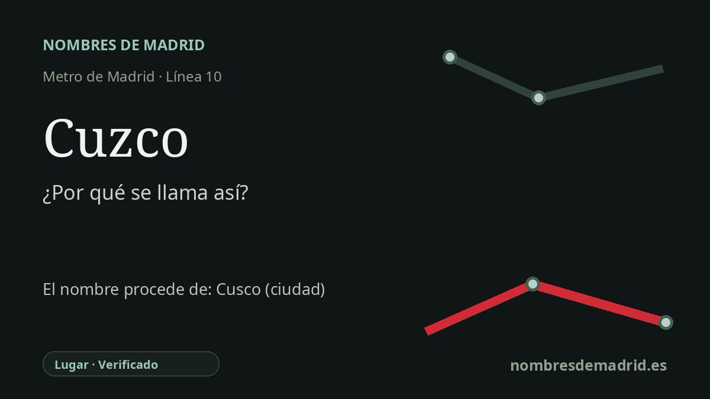

Publicado el · Investigación de Nombres de Madrid · Cómo verificamos cada origen · 8 fuentes consultadas
Respuesta rápida
La estación de Cuzco debe su nombre a la Plaza de Cuzco, en el paseo de la Castellana. La plaza recuerda a Cusco/Cuzco, la ciudad andina que fue capital del Imperio inca.
La historia del nombre
La estación de Cuzco se llama así por el lugar situado justo encima: la Plaza de Cuzco, una glorieta del paseo de la Castellana a la altura de la avenida de Alberto Alcocer. El Callejero Oficial de Madrid sitúa la Plaza de Cuzco en Chamartín y Tetuán, y el Consorcio Regional de Transportes registra los accesos de la estación en el paseo de la Castellana, números 125 y 162.
La plaza conmemora a Cusco, también escrito tradicionalmente Cuzco en el español usado fuera del Perú. La ciudad peruana fue capital del Tawantinsuyu, el Imperio inca, y la UNESCO la describe como una ciudad donde se superponen la capital inca y la ciudad colonial. Su nombre quechua suele darse como Qosqo o Qusqu; las obras de referencia lo explican a menudo como 'ombligo' o 'centro', en alusión a su papel simbólico en el mundo inca.
El entorno madrileño también forma parte de la historia. La zona de la Plaza de Cuzco pertenece a la prolongación hacia el norte de la Castellana, planteada tras la desaparición del antiguo Hipódromo de la Castellana en los primeros años treinta. La plaza actual forma parte de la serie de grandes cruces del eje empresarial moderno al norte de Nuevos Ministerios.
El Metro llegó después. Cuzco abrió el 10 de junio de 1982 dentro del tramo Fuencarral-Nuevos Ministerios de la antigua línea 8, poco antes del Mundial de Fútbol de 1982 celebrado en España. En 1998 ese trazado norte fue absorbido por la actual línea 10, por eso Cuzco se encuentra hoy entre Plaza de Castilla y Santiago Bernabéu.
La etimología principal es segura: estación, plaza y ciudad peruana forman una cadena clara. El punto más delicado es la fecha exacta en que Madrid asignó el nombre a la plaza. El 21 de octubre de 1953 se repite en fuentes secundarias, pero no está confirmado por el acuerdo municipal original.